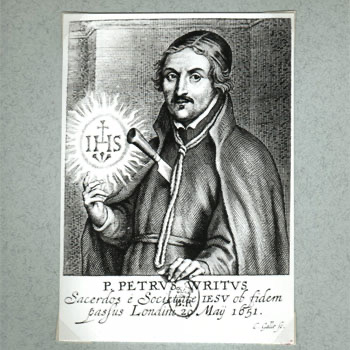

Isusovački blaženici
Svećenik
Bl. Petar Wright
1603. – 1651.
Nakon udaljavanja od obiteljske vjere ponovno je pronašao put u Crkvu i Družbu Isusovu. Kao svećenik i vojni kapelan služio je engleskim katolicima.
Tekst je preveden i prilagođen uz pomoć umjetne inteligencije.

Izvor slike
- Spomendan
- 1. prosinca
- Zaštitništvo
- Nije navedeno u izvoru
- Životni vijek
- 1603. – 1651.
- Djelovanje
- Obitelj i gubitak bližnjih · Obraćenje i novi počeci · Progoni i progonstvo · Mučeništvo
- Razdoblje
- 17. stoljeće
- Podrijetlo
- Northamptonshire, Engleska
- Ulazak u Družbu Isusovu
- 1629.
- Svećeničko ređenje
- 1639.
- Rođenje — dostupni podaci
- 1603.; dan i mjesec nisu potvrđeni u provjerenom izvoru.
- Mjesto rođenja
- Northamptonshire, Engleska
- Datum smrti
- 19.05.1651.
- Mjesto smrti/mučeništva
- Tyburn, London, Engleska
- Okolnosti smrti/mučeništva
- Pogubljen vješanjem i sakaćenjem zbog katoličkoga svećeništva i djelovanja za progona.
- Uloga
- Svećenik
- Mučenik
- Da
- Ostale oznake
- Mučenik engleskih protukatoličkih progona
- Pripadnost
- Isusovac
- Drugi oblici imena
- Peter Wright · Peter
Životopis
Petar Wright rođen je 1603. u siromašnoj katoličkoj obitelji u Northamptonshireu. Bio je jedno od dvanaestero djece. Nakon očeve smrti morao je pomagati obitelji radom u pravničkome uredu. S vremenom se udaljio od katoličke vjere. Nakon deset godina takva rada otišao je u Nizozemsku i pristupio engleskoj vojsci, ali vojnički život nije prihvatio.
Susret s isusovcima u Liègeu pomogao mu je vratiti se Crkvi. Školovao se u Gentu, 1629. ušao u novicijat u Wattenu, a 1639. primio svećenički red. Služio je u engleskome kolegiju u Saint-Omeru, potom kao vojni kapelan pukovnije Henryja Gagea u Flandriji. S njom je 1644. došao u Englesku. Nakon Gageove smrti bio je kapelan markiza od Winchestera u Hampshireu i Londonu.
Na Svijećnicu su ga lovci na svećenike zatekli dok se pripremao za misu. Markiz ih je pokušao zadržati, ali pronašli su Wrighta na krovu i odveli u Newgate. Protiv njega je svjedočio Thomas Gage, brat njegova nekadašnjeg zapovjednika. Osuđen je zbog svećeničke službe. Nastojanje španjolskoga veleposlanika da ga spasi nije uspjelo.
Posljednju je noć proveo u molitvi, a ujutro slavio misu. Na Tyburnu je 19. svibnja 1651. pred okupljenima javno ispovjedio katoličku vjeru i pripadnost Družbi Isusovoj. Nakon pogubljenja prijateljima je dopušteno preuzeti njegovo tijelo, koje je potom pokopano u isusovačkome kolegiju u Liègeu. Papa Pio XI. proglasio ga je blaženim 15. prosinca 1929.
Tekst je preveden i prilagođen uz pomoć umjetne inteligencije.
Pročitaj više na izvornoj stranici ↗